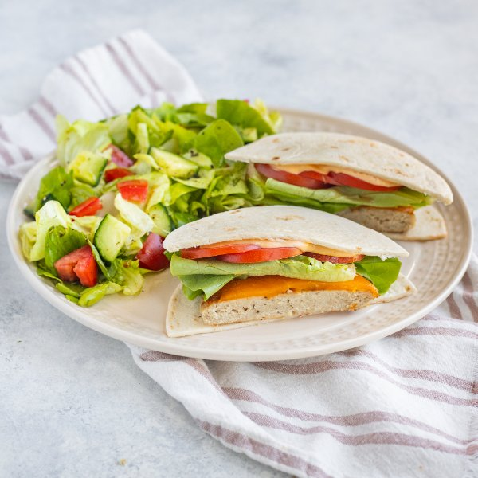

Cheesy Chicken Tortilla Burger with Special Sauce & Side Salad

Total Time
30 min
Nutrition (Per Serving)
702.3 kcalCalories
41.8 gProtein
48.1 gCarbs
39.4 gFat
Full nutrition table
| Calories | 702.3 kcal |
| Total fat | 39.4 g |
| Saturated fat | 12 g |
| Trans fat | 1.2 g |
| Cholesterol | 154.9 mg |
| Sodium | 809.8 mg |
| Carbohydrates | 48.1 g |
| Fiber | 5.2 g |
| Sugars | 11.3 g |
| Protein | 41.8 g |
| Potassium | 1536 mg |
| Calcium | 336.5 mg |
| Iron | 5.4 mg |
| Vitamin A | 1461 IU |
| Vitamin C | 23.1 mg |
| Vitamin D | 7.7 IU |
Cookware
Ingredients
- 2 headsbutter (Boston) lettuce
- ½ (8 oz) blockcheddar cheese
- 1English cucumber
- 1 lbground chicken
- 8small flour tortillas
- 4tomatoes
- apple cider vinegar
- black pepper
- cayenne pepper
- Dijon mustard
- extra virgin olive oil
- honey
- Italian seasoning
- ketchup
- mayonnaise
- panko bread crumbs
- salt
- Worcestershire sauce
Steps
- Place chicken, bread crumbs, Worcestershire, salt, and pepper in a medium bowl; mix with your hands until well combined. Divide the chicken mixture into 4 portions and form into ½-inch thick patties; place on a plate and set aside.1 lb ground chicken
½ cup panko bread crumbs
2 tsp Worcestershire sauce
1 tsp salt
½ tsp black pepper - Preheat a large skillet over medium-high heat.
- While the skillet heats, up thinly slice cheese.½ (8 oz) block cheddar cheese
- Once the skillet is hot, add oil and swirl to coat the bottom. Add burger patties and cook, undisturbed, until golden underneath, 3-4 minutes; flip patties, top with cheese, and cook an additional 3-4 minutes, until cooked through. Remove to a clean plate.2 tsp extra virgin olive oil
- Meanwhile, wash and dry the fresh produce.4 tomatoes
2 heads butter (Boston) lettuce
1 English cucumber - Place oil, vinegar, Dijon, honey, and spices in a clean medium bowl. Whisk to combine the dressing.4 tsp extra virgin olive oil
2 tsp apple cider vinegar
1 tsp Dijon mustard
1 tsp honey
½ tsp Italian seasoning
½ tsp salt
¼ tsp black pepper - Slice two tomatoes crosswise into thin rounds; medium dice remaining tomatoes. Place slices on another plate and add diced tomato to the bowl with the dressing.
- Separate lettuce into leaves. Set aside a few leaves per burger and chop (or tear) remaining leaves into bite-sized pieces. Add whole leaves to the plate and chopped lettuce to the bowl. Set the plate aside.
- Trim and quarter cucumber lengthwise, then cut crosswise into bite-sized pieces. Add to the bowl and toss to combine the salad. Set aside.
- Place mayo, ketchup, Dijon, and cayenne in a small bowl. Whisk to combine the special sauce and set aside.2 tbsp mayonnaise
4 tsp ketchup
2 tsp Dijon mustard
⅛ tsp cayenne pepper - Warm tortillas in another skillet, oven, or microwave (optional).8 small flour tortillas
- To assemble the burgers, place half of the tortillas on a flat surface, then top with cheesy burger patties, lettuce leaves, tomato slices, and special sauce. Close with the remaining tortillas and cut in half.
- To serve, divide chicken burgers and salad between plates. Enjoy!